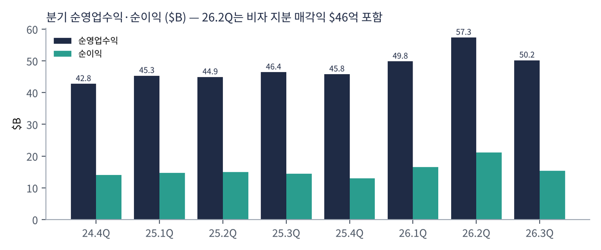
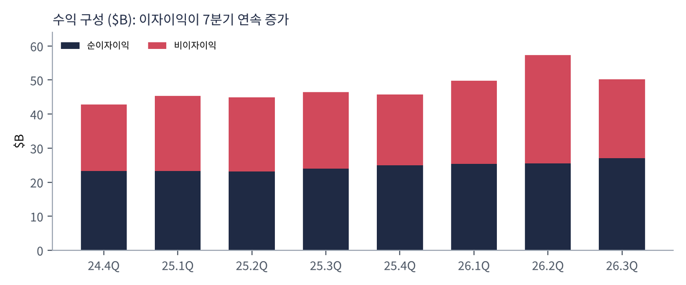
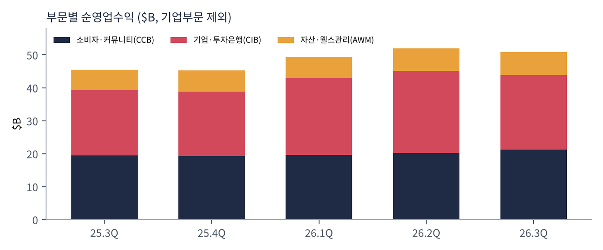
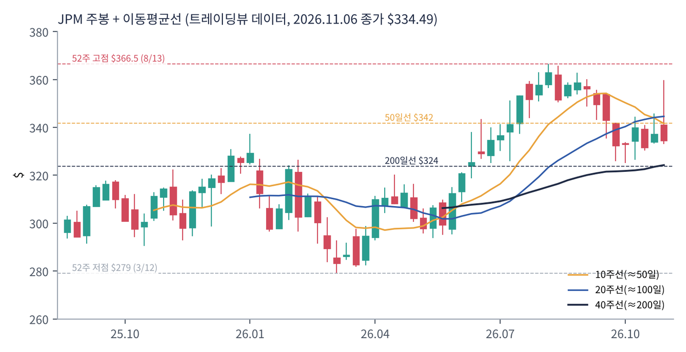
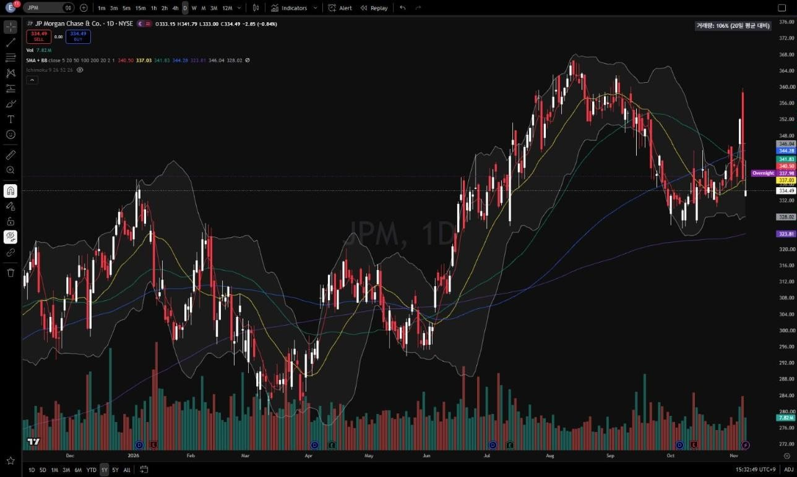
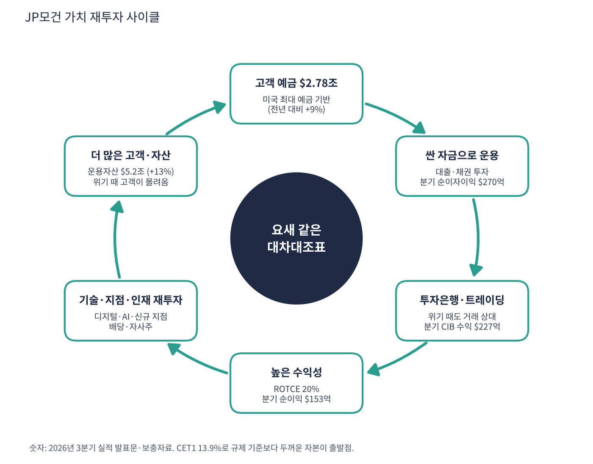

JP모건체이스는 자산 기준 미국 최대 은행이다. 동네 지점·신용카드(체이스), 기업 대출·투자은행·트레이딩(JP모건), 부자 고객 자산관리를 한 회사에서 모두 한다. 예금 $2.78조, 운용자산 $5.2조를 가진 '미국 금융 시스템의 중심축'이며, 위기가 오면 고객 돈이 오히려 몰려드는 은행이다.
| 항목 | 내용 |
|---|---|
| 종목 | JPMorgan Chase & Co. (JPM) · NYSE · 본사 뉴욕 |
| 시가총액 | 약 $8,890억 · PER 14.0배 · 배당수익률 1.87% (트레이딩뷰, 11/6 종가 $334.49) |
| 최근 분기(26.3Q) | 순영업수익 $502억, 순이익 $153억, EPS $5.57, ROTCE 20% |
| 자본 | 보통주자본비율(CET1) 13.9%, 주당 장부가 $132.30, 주당 유형장부가 $112.64 |
| 사업 부문 | 소비자·커뮤니티(CCB), 기업·투자은행(CIB), 자산·웰스관리(AWM), 기업부문 |
| 직책 | 인물 | 역할·특징 |
|---|---|---|
| 회장 겸 CEO | 제이미 다이먼 | 2006년부터 CEO. 2008년 금융위기 때 베어스턴스·WaMu, 2023년 퍼스트리퍼블릭을 인수하며 위기 때마다 몸집을 키운 인물 |
| CFO | 제레미 바넘 | 실적 발표·가이던스 담당. 보수적 숫자 제시로 유명 |
| 부문 CEO들 | 메리앤 레이크(CCB) 등 | 다이먼의 후계 후보군. 후계 구도가 시장의 장기 관심사 |
경영 스타일: '요새 같은 대차대조표(fortress balance sheet)'. 다이먼은 좋을 때 자본을 쌓고, 나쁠 때 그 자본으로 경쟁사를 인수하거나 점유율을 가져온다. 주주서한에서 경기·지정학·금리 위험을 가장 먼저 경고하는 은행장으로 유명하며, 경쟁사보다 높은 CET1(13.9%)을 유지한다. 동시에 기술 투자에는 공격적이다. 연간 기술 예산이 약 $180억(2025년 회사 발표 기준) 수준으로 웬만한 IT 기업보다 크고, AI를 사기 탐지·상담·트레이딩·개발 생산성에 전사적으로 적용 중이다.
8,000만 명이 넘는 소비자 고객과 기업 결제망에서 나오는 거래 데이터. 같은 AI를 적용해도 데이터 규모 때문에 효과가 더 크다. 결제(일 수조 달러 처리)는 은행 업무의 핵심 인프라다.
개인의 첫 계좌부터 주택담보대출·카드·자산관리, 기업의 결제·대출·M&A·IPO까지 한 은행에서 처리하는 것. 지점이 없는 지역(미국 48개 주 이상)에 신규 지점을 계속 낸다.
| 분기 | 순영업수익 | 순이자이익 | 비이자이익 | 대손충당금 | 순이익 | EPS | 특이 사항 |
|---|---|---|---|---|---|---|---|
| 24.4Q | $428억 | $234억 | $194억 | $26.3억 | $140억 | $4.81 | |
| 25.1Q | $453억 | $233억 | $220억 | $33.0억 | $146억 | $5.07 | |
| 25.2Q | $449억 | $232억 | $217억 | $28.5억 | $150억 | $5.24 | |
| 25.3Q | $464억 | $240억 | $225억 | $34.0억 | $144억 | $5.07 | ROTCE 20% |
| 25.4Q | $458억 | $250억 | $208억 | $46.5억 | $130억 | $4.64 | 충당금 급증 |
| 26.1Q | $498억 | $254억 | $245억 | $25.1억 | $165억 | $5.94 | ROTCE 23% |
| 26.2Q | $573억 | $255억 | $318억 | $25.1억 | $212억 | $7.70 | 비자 지분 매각익 $46억, ROTCE 29% |
| 26.3Q | $502억 | $270억 | $231억 | $27.4억 | $153억 | $5.57 | ROTCE 20%, CET1 13.9% |


흐름 요약: 2년간 순영업수익은 분기 $428억 → $502억(+17%), 순이자이익(NII)은 7분기 연속 늘어 3분기 $270억으로 사상 최대다. 2분기 순이익 $212억은 비자 C주 매각익 $46억이 들어간 일회성 고점이다. 25.4Q 충당금 $47억 급증으로 순이익이 일시 감소했지만 2026년에는 다시 $25~27억으로 안정됐다. 9개월 누적 순영업수익은 $1,574억(+15%)이다.
| 부문 | 돈을 버는 방식 | 26.3Q 순영업수익 | 순이익 | 비중 |
|---|---|---|---|---|
| 소비자·커뮤니티(CCB) | 예금(낮은 이자로 조달), 신용카드, 주택·자동차 대출, 지점망 | $211.7억 | $56.7억 | 42% |
| 기업·투자은행(CIB) | M&A 자문, 주식·채권 발행, 트레이딩, 기업 대출·결제 | $227.3억 | $82.5억 | 45% |
| 자산·웰스관리(AWM) | 운용보수(운용자산 $5.2조), 부자 고객 자산관리 | $69.1억 | $18.4억 | 14% |
| 기업부문 | 자금 운용·투자 손익(2분기 비자 매각익) | $0.9억 | – | – |

수익의 절반은 이자(예금과 대출의 금리 차), 절반은 수수료·트레이딩이다. 이자 부문은 금리에, 투자은행 부문은 증시·M&A 경기에 좌우돼 서로 보완된다. 3분기 CIB는 2분기($249억)보다 줄었지만 1년 전($199억)보다 14% 많다. CCB는 5분기 연속 증가로 가장 안정적인 엔진이다(부문 수치는 관리 기준).
다이먼의 메시지는 매 분기 같다. "어떤 환경에서도 고객 곁에 있을 수 있는 은행". 수익 극대화보다 생존과 신뢰를 먼저 두고, 그 신뢰로 점유율을 늘리는 전략이다.
| 축 | 내용 |
|---|---|
| 요새 대차대조표 | 높은 자본·유동성 → 위기 때 인수자·최후의 대출자 역할 → 점유율 확대 |
| 전국 지점·디지털 | 미국 전역 지점 확대 + 앱. 예금 점유율 1위 굳히기 |
| 글로벌 기업금융 | 세계 1위 투자은행 수수료 점유율 유지, 결제 인프라 |
| 기술·AI | 연 $180억 수준 기술 투자로 비용 효율과 상품 경쟁력 확보 |
| 주주환원 | 배당 + 자사주. 단, 과잉 자본은 위기 대비로 남겨 둠 |


위: 트레이딩뷰 주봉 데이터로 재구성(10·20·40주선). 아래: 트레이딩뷰 공개 차트 일봉 캡처(작도 숨김).
| 이동평균 | 값 | 종가 대비 | 해석 |
|---|---|---|---|
| 5일선 | $340.50 | -1.8% | |
| 20일선 | $337.03 | -0.8% | |
| 50일선 | $341.83 | -2.1% | 8월 고점 이후 하락 전환 |
| 100일선 | $344.28 | -2.8% | 가장 위의 저항 |
| 200일선 | $323.81 | +3.3% | 장기 추세 지지(+3.3%) |
3월 저점 $279 → 8월 고점 $366.5(+31%) 후 3개월째 $325~360 박스권이다. 단기선들이 50·100일선 아래로 내려와 중기 조정 중이지만 200일선 위의 장기 상승 추세는 유지 중이다.
| 규칙 | 기준 | 현재 값 | 신호 |
|---|---|---|---|
| 장기 추세 필터 | 종가 vs 200일선 | $334.49 > $323.81 | 매수 |
| 중장기 교차 | 50일선 vs 200일선 | $341.83 > $323.81 | 매수 |
| 단기 교차 | 20일선 vs 50일선 | $337.03 < $341.83 | 매도 |
| 돈키언 채널 | 55일 고가 $362.86 / 저가 $325.07 | 중간값 $343.97 아래 | 매도 |
| 1개월 모멘텀 | 21거래일 수익률 | +0.9% (기준 $331.42) | 매수 |
| 3개월 모멘텀 | 63거래일 수익률 | -7.0% (기준 $359.79) | 매도 |
| 6개월 모멘텀 | 126거래일 수익률 | +10.7% (기준 $302.10) | 매수 |
| 12개월 모멘텀 | 252거래일 수익률 | +7.3% (기준 $311.68) | 매수 |
| 종합 (8개 평균) | +0.25 | 매수 우위 |
해석: 장기 신호(200일선, 50/200, 6·12개월)는 매수, 단기 신호(20/50, 돈키언, 3개월)는 매도로 엇갈려 +0.25(약한 매수 우위)다. 14일 ATR $7.88 (2.4%)로 변동성은 낮다.
| 가격 | 무엇이 바뀌나 | 의미 |
|---|---|---|
| $342 ~ 344 | 50일선·돈키언 중간값·100일선 회복 | 점수 +0.75로 상승 |
| $360 | 3개월 모멘텀 기준가 | 점수 +1.00 가능 |
| $325 | 55일 저점 이탈 | 박스권 하단 붕괴 |
| $324 | 200일선 이탈 | 점수 -0.25 이하, 장기 추세 훼손 |
박스권 하단(55일 저점 $325)과 200일선($324)이 겹치는 구간이 가장 좋은 손익비다. 1차 목표 $344(50·100일선), 2차 $366(52주 고점). 200일선을 ATR 1배 이상 하회($316) 시 손절.
| 악재 요인 | 내용 | 강도 |
|---|---|---|
| 신용 사이클 | 25.4Q 충당금 $47억 급증 사례. 소비자 카드 연체, 상업용 부동산·사모신용 노출이 커지면 이익 감소 | 높음 |
| 금리 하락 | 기준금리 인하가 이어지면 순이자이익(수익의 절반) 성장 둔화 | 중간 |
| 밸류에이션 프리미엄 | P/TBV 3배 — 경쟁사 대비 최대 수준. ROTCE 하락 시 재평가 | 중간 |
| 후계 리스크 | 다이먼 이후 체제 불확실성 | 중간 |
| 규제·지정학 | 자본 규제 변화, 대형 소송·벌금, 국제 제재 | 참고 |
| 티커 | 회사 | 시가총액 | PER(TTM) | PEG | P/S | EPS 성장(YoY) |
|---|---|---|---|---|---|---|
| JPM | JP모건체이스 | $889B | 14.0배 | 0.79 | 4.48배 | +18% |
| BAC | 뱅크오브아메리카 | $341B | 11.8배 | 0.82 | 2.91배 | +14% |
| WFC | 웰스파고 | $252B | 11.8배 | 0.72 | 2.98배 | +17% |
| C | 씨티그룹 | $200B | 11.6배 | 0.27 | 2.22배 | +44% |
| GS | 골드만삭스 | $250B | 12.5배 | 0.31 | 3.82배 | +41% |
| MS | 모건스탠리 | $285B | 14.4배 | 0.50 | 3.63배 | +29% |
비교 결론: JP모건 PER 14.0배는 대형 상업은행(11.6~11.8배)보다 약 20% 비싸고 모건스탠리(14.4배)와 비슷하다. 그런데 EPS 성장률은 씨티(+44%)·골드만(+41%)이 훨씬 높아 PEG로는 이들이 더 싸다(0.27·0.31, '적극 매수' 구간). 성장 대비 가격만 보면 JP모건은 피어 중 가장 비싼 편이고, 그 프리미엄은 안정성·수익성(ROTCE)에 대한 대가다.
JP모건은 적자 기업이 아니다(최근 4분기 순이익 $659억). 은행에는 '현금 런웨이' 개념이 맞지 않는다. 은행의 생존력은 현금 소진 속도가 아니라 자본비율과 예금 안정성으로 측정한다.
| 지표 | 값 | 의미 |
|---|---|---|
| 보통주자본비율(CET1) | 13.9% | 규제 최소 요구치보다 수 %p 높음. 손실 흡수력 |
| 예금 | $2.78조 (+9%) | 위기 때 오히려 유입되는 '피난처 예금' |
| ROTCE(유형자기자본이익률) | 20% (2분기 29%) | 대형은행 평균 약 12~15%를 크게 상회 |
| 주가 / 유형장부가(P/TBV) | 2.97배 | $334.49 ÷ $112.64. 경쟁사(1~2배)보다 프리미엄 |
| 주가 / 장부가(P/B) | 2.53배 | $334.49 ÷ $132.30 |
| 기준 | 매출 | P/S | 비고 |
|---|---|---|---|
| 트레이딩뷰(총수익 기준) | $2,791억 | 4.48배 | 이자수익 총액 포함 |
| 순영업수익 TTM(SEC) | $2,032억 | 4.38배 | 은행에 맞는 매출 개념 |
| 대형은행 평균(BAC·WFC·C) | – | 약 2.7배 | 2.91 / 2.98 / 2.22 |
| 투자은행(GS·MS) | – | 약 3.7배 | 3.82 / 3.63 |
해석: JP모건은 P/S·P/TBV 모두 경쟁 은행보다 50~100% 비싸다. 은행 주가는 보통 장부가 근처에서 움직이므로 P/TBV 3배는 '최고 품질 은행 프리미엄'이 최대치에 가깝다는 뜻이다. 이 프리미엄은 ROTCE 20%가 유지되는 한 정당하다(장부가가 매년 15~20%씩 불어나므로). ROTCE가 15%로 내려가면 P/TBV 2배대가 합리적이어서 하락 여지가 생긴다.
은행에는 EBITDA가 의미가 없다. 은행에게 이자는 영업비용(원가)이고 감가상각 비중도 작기 때문이다. 대신 은행의 'EBITDA에 해당하는 지표'인 충당금 전 영업이익(PPNR)을 추정했다.
| 지표 | 값 | 산출 |
|---|---|---|
| 순이익 (TTM) | $659억 | SEC 25.4Q~26.3Q 합계 |
| 세전이익 (추정) | 약 $845억 | 순이익 ÷ (1 − 법인세율 22% 가정) |
| 대손충당금 (TTM) | $124억 | SEC 합계 |
| PPNR (추정) | 약 $970억 — 흑자 | 세전이익 + 충당금. 비자 매각익 $46억 포함 |
| 방식 | PER | EPS 성장률 | PEG | 판정 |
|---|---|---|---|---|
| 트레이딩뷰 (TTM) | 14.0배 | +18.1% | 0.79 | 투자 적격 |
| 직접 계산 (SEC 희석 EPS) | 14.0배 ($334.49 ÷ $23.85) | +18.1% ($20.19 → $23.85) | 0.78 | 투자 적격 |
| 비자 매각익 제외 (추정) | 약 14.8배 (EPS 약 $22.6) | 약 +12% | 약 1.23 | 기준 초과 |
판정: 표시 PEG 0.79 → '투자 적격'. 그러나 2분기 일회성 이익(비자 매각익, 세후 약 $35억 추정)을 빼면 EPS 성장률은 12% 안팎으로 낮아지고 PEG는 1.2 수준으로 기준을 넘는다. 즉 표면상 투자 적격이지만, 일회성을 걷어내면 '적정~약간 비싼' 가격이다. 은행은 원래 PER 10~15배의 저성장 업종이라 PEG 기준을 맞추기가 구조적으로 어렵다는 점도 감안해야 한다.

JP모건 사이클의 중심은 기술도 상품도 아닌 자본(요새 대차대조표)이다. 두꺼운 자본 → 신뢰 → 싼 예금 → 높은 수익 → 다시 자본으로 쌓이는 구조다.
| 고리 | 현재 숫자 | 고리 강도 | 약해지는 신호 |
|---|---|---|---|
| ① 고객 예금 | $2.78조 (+9%) | 강함 | 예금 이탈, 예금 금리 경쟁 |
| ② 싼 자금 운용 | 순이자이익 분기 $270억(사상 최대) | 강함 | 금리 인하로 순이자마진 축소 |
| ③ 투자은행·트레이딩 | CIB 분기 $227억, 순이익 $82억 | 강함 | 증시·M&A 냉각 |
| ④ 높은 수익성 | ROTCE 20% | 강함 | 충당금 급증(25.4Q 같은 분기) |
| ⑤ 기술·지점 재투자 | 연 $180억 수준 기술 예산, 신규 지점 | 진행 중 | 비용 증가 > 수익 증가 |
| ⑥ 고객·자산 확대 | 운용자산 $5.2조 (+13%) | 강함 | 자산관리 유출 |
엔비디아 사이클과의 차이: 엔비디아는 '기술 우위'가 사이클을 돌리지만 JP모건은 '위기 때의 상대적 우위'가 사이클을 돌린다. 2008년·2023년 은행 위기마다 경쟁사를 인수하며 한 단계씩 커졌다. 그래서 이 사이클은 호황보다 불황에 더 빠르게 돈다는 특이점이 있다. 약점은 ②번 금리 고리로, 기준금리가 크게 내려가면 순이자이익 성장이 멈출 수 있다.